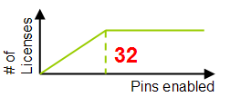

PS1600 functionality and features
General Features
- Data rates: The Pin Scale 1600 digital card can handle data rates up to 1600 Mbit/s drive, receive and capture.
- Channels: The PS1600 card features 128 single ended channels. It consists of eight channel modules with 16 single ended (or 8 differential) channels in each module (see PS1600 hardware overview).
- Pogo Pins:
- Standard pogo assembly: The PS1600 card supports the standard (compatible) 8 x 16 pogo cable assembly for backward DUT board compatibility providing a total of 1408 pins for the standard filling scheme and a maximum of 2048 for a non-standard filling scheme.
- High-density pogo assembly: The PS1600 card also supports the high-density 4 x 32 pogo cable assembly which uses standard (compatible) pins for the first 16 pins in the pogo block and additional pins for the remaining 16 pins (see PS1600 pogo pin assignment). This provides a maximum of 2816 pins if you use the standard filling scheme, and a maximum of 4096 pins for a non-standard filling scheme.
- Very-high-density pogo assembly: The PS1600 card also supports the very-high-density 2 x 64 pogo cable assembly that is to be used for special configurations only. This pogo cable assembly uses standard (compatible) pins for the first 16 pins in the pogo block, additional pins for the next 16 pins, and positions in three extra rows for the remaining 32 pins (see PS1600 pogo pin assignment). This provides a maximum of 5632 pins if you use the standard filling scheme, and a maximum of 8192 pins for a non-standard filling scheme.
- Independent clock domains per pin enable each pin to run at a different data rate
(see PS1600 pin setup). This allows:
- Unconstrained routing on the DUT board
- Concurrent testing of all interfaces at their native data-rates
- Optimized tester resource utilization with per pin granularity
- Each pin to synthesize its own and independent data-rate
- A Timing Measurement Unit (TMU) per pin is available (see PS1600 Time measurement unit per pin). The N5866U license is required to access this
feature.Note The TMU on the Pin Scale 1600 card (PS1600) can also be used on the high voltage channels.
- One sequencer‑controlled ADC for high accuracy voltage measurements is provided for each PS1600 module (Board ADC). This gives you 8 ADCs per PS1600 card = ADCs for 16 pins (see PS1600 hardware overview).
- A sequencer‑controlled Pin PMU (PPMU) is provided for each pin for accurate current and voltage measurements (see PS1600 hardware overview).
- Pattern synchronous DC value measurements (see PS1600 DC value measurements) can be performed during the execution of a pattern using either the Board ADC, the Pin PMU, or both depending on the accuracy you require. This feature is also referred to as sequencer‑controlled measurement of values.
- A loopback mode (SmartLoop™) is also supported on a per pin basis and it supports single ended and differential signals. It is active and retiming is possible. Also the loop direction is selectable. (See Pin Scale 1600 SmartLoop (loopback) setup.)
- PRBS generation and compare on each pin (also for loopback tests) is possible. See How to set up and execute a PRBS test.
- Jitter injection in the drive and loopback signals (see PS1600 jitter injection) is possible.
- Protocol Testing (see Overview of the protocol engine per pin) allows you to handle non-deterministic
DUT responses. You can:
- Track and synchronize with a drifting data eye and forward the drifting clock (clock forwarding) to other pins of the same pogo block to ensure they also track the drift (eye sync & track)
- Detect and synchronize with a data "word" independently of what precedes it (serial sync)
- Correct for 8 => 10 bit conversion disparities (8B10B disparity)
- Detect data packets (payload) independently of idle or redundant packets that may be in-between (payload detection)
- Embedded timing search per-pin functionality allows you to adjust your timing to the actual behavior of the DUT. As this feature is embedded, it saves test time, as the data does not need to be uploaded to the work station.
- A switchable pulldown resistor in the front-end chip on each channel is provided to drain any residual charges that may be on the pins (see PS1600 level setup).
- The free-running clock enables a channel to provide a 800 MHz clock signal, that is not pattern controlled. This is part of the base license.
Type parameter
The type parameter for the Pin Scale 1600 Digital Card is PS1600, but in some cases the channel card is also referred to as CPIO.
Base capabilities
Features included in the basic PS1600 license
PS1600 cards have the following base capabilities:
- 100 Mbps speed
- 16 Mbyte vector memory
- Memory pooling
- 256 waveforms and 24 edges (drive: 16, receive: 8)
- Single-ended and differential signaling
- Clock domain per pin
- Protocol tracking
- Payload detection
- Jitter injection
- Multi-site and multi-port setups
- 800 MHz free-running clockNote To operate Smart Scale cards you must enable the licensed Xpress Data Mode (xpressdata) in the GLOBAL section of the model file, and in the device license file if this exists.
Data rate licenses
While drive actions (edges) are licensed, receive actions (edges) are free on PS1600 cards starting with SmarTest 7.1.3.
Basic licenses
Features requiring conventional licenses
The following features require the conventional licenses used for other applications and cards.
- TMU per pin:
To enable the TMU per pin (ppTMU) you need the conventional license for this feature. One license enables one pin, 2 licenses 2 pins, etc. - up to 31 licenses for 31 pins. The 32nd license enables all test system pins, so no further licenses beyond 32 are required. This is illustrated in the figure below.

- Memory depth:
For the following memory depths, you also need the conventional licenses
- 16 - 32 MB
- 32 - 64 MB
- 64 - 112 MB (max. for PS1600 Rev. A)
- 112 - 224 MB (max. for PS1600 rev. B)
Expanded Functionality
Features included in additional PS1600 licenses
The following expanded features require special PS1600 licenses.
- A PHY test up to 1600 Mbit/s including SmartLoop™ (loopback) and PRBS per pin.
- The following base rates require three separate licenses:
- 100 - 200 Mbit/s
- 200 - 533 Mbit/s
- 533 - 1600 Mbit/s
Licenses overview
For an overview of all licensed V93000 products by Product ID, as they are referenced on the Entitlement Certificates, see Licensed V93000 products.
Functional changes
- Introduced in SmarTest 7.1.0
- SmarTest 7.1.3: High-voltage input capability added
- SmarTest 7.1.3: Receive actions no longer licensed
- SmarTest 7.3.2: Support of PS1600B
- SmarTest 7.5.4 / 8.3.3: "Very-high-density (VHD) pogo cable assembly" added.